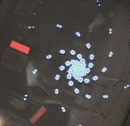
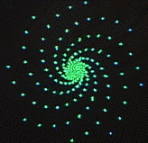
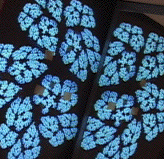
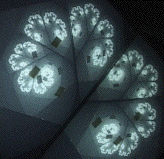
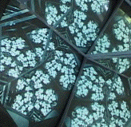
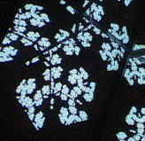

| 1. Find the IFS rules to generate this spiral. Click the small picture for an enlarged color-reversed image. Here is an answer. |  | 2. Find the IFS rules to generate this spiral. Click the small picture for an enlarged color-reversed image. Here is an answer. |  |
| 3. Find the IFS rules to generate this one-mirror fractal. Click the small picture for an enlarged color-reversed image. Source and target points are labeled. Here is an answer. |  | 4. Find the IFS rules to generate this one-mirror fractal. Click the small picture for an enlarged color-reversed image. Here is an answer. |  |
| 5. Find the IFS rules to generate this two-mirror fractal. Click the small picture for an enlarged image with source and target points marked and color-coded. Here is an answer. |  | 6. Find the IFS rules to generate this two-mirror fractal. Click the small picture for an enlarged image with source and target points marked. Here is an answer. |  |
Return to Video Feedback Lab.